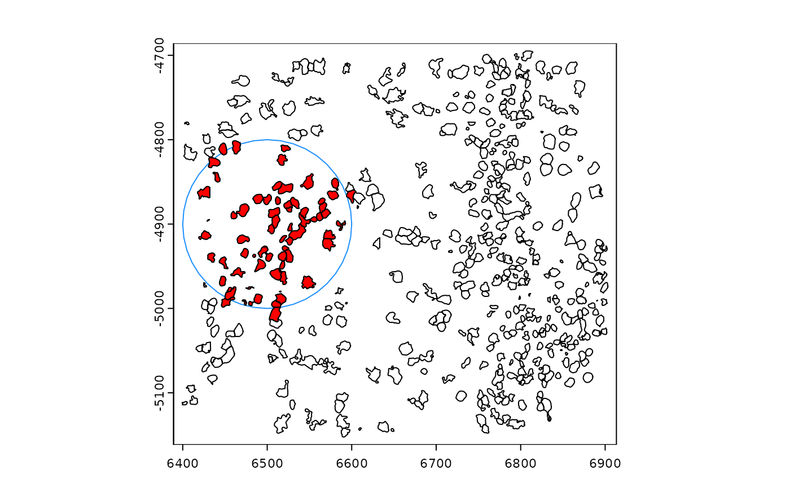

Select spatial geometries based on a list of spatial filters.
The final item in provided in the list is the layer of information
being queried.
By default, results will be returned as a new polygon-based spatial unit
with selection information recorded in the associated cell metadata.
Spatial queries may perform queries on the geometries themselves, so
intersect() operations are performed under the hood. For a lighter weight
option that just finds spatial relationships, see relate()
Usage
spatQuery(
gobject,
filters,
name = "query_polys",
clip = TRUE,
use_centroids = NULL,
buffer = 0,
make_valid = FALSE,
combine_fragments = FALSE,
dissolve = FALSE,
return_table = FALSE,
return_ids = FALSE,
return_gobject = TRUE,
verbose = NULL
)
spatQueryGiottoPolygons(
gobject,
filters,
name = "query_polys",
clip = TRUE,
use_centroids = NULL,
buffer = 0,
make_valid = FALSE,
combine_fragments = FALSE,
dissolve = FALSE,
return_table = FALSE,
return_ids = FALSE,
return_gobject = TRUE,
verbose = NULL
)Arguments
- gobject
giottoobject- filters
named list of characters and/or
giottoPolygonsto use as spatial filters for the final item in the list.[
character] list name designates the gobject spatial unit to use as a filter. The actual character values should either be"all"or a specific vector of cell_IDs to use.[
giottoPolygon] inputs are directly used as filters. List names are used when reporting the spatial relationships in output geometry objects. These can also be used as centroids and additionally can be buffered.[
SpatVector] inputs are directly used. Can also be converted to centroids and/or buffered.[
numeric] input is read as XY pairs (e.g.c(x1, y1, x2, y2, ...)), to be used as centroids. These are bufferable.['spatLocsObj'] inputs are directly used as centroids. These are bufferable.
- name
(optional) character. If not
NULL, a new spatial unit of this name will be generated from the results.- clip
logical. Default =
TRUE. Whether final round of querying should produce polygons clipped by the polygons used to select them.- use_centroids
character vector. Values must correspond to names in
filters. Selectedfilterswill be converted to centroids. (prefers usage of the first set of spatlocs for that spat_unit)- buffer
numeric. Or named vector of numerics. Names must correspond to those in
centroids. Applies the specified buffer to the centroid to allow it to be used infilter. A0will skip buffering, but this is only permitted if is also the the last item infilter. Unbuffered points may only return results as IDs (return_ids = TRUE). Do note that buffering on a large number of elements can cause significant slowdowns.- make_valid
logical (default =
FALSE). Whether to make geometries valid before using them. SetTRUEif topology errors show up.- combine_fragments
logical. (default =
FALSE). Whether to combine geoms fragmented by the intersections as multipolygons based on thepoly_IDcol. IfTRUE, the operation may introduceNAs in the spatial relationship information.- dissolve
logical. (default =
FALSE). Ifcombine_fragments = TRUE, whether to also merge the multipolygon into a single polygon.- return_table
logical. (Default =
FALSE) Overridesreturn__object. IfTRUE, return only the relationships as adata.table- return_ids
logical. (Default =
FALSE) Overridesreturn_gobject. IfTRUE, return only the poly_IDs of the final entry infilters- return_gobject
logical. (Default =
TRUE). Whether to return the new set of polygons attached to the giotto object.- verbose
verbosity
Examples
g <- GiottoData::loadGiottoMini("vizgen")
#> 1. read Giotto object
#> 2. read Giotto feature information
#> 3. read Giotto spatial information
#> 3.1 read Giotto spatial shape information
#> 3.2 read Giotto spatial centroid information
#> 3.3 read Giotto spatial overlap information
#> 4. read Giotto image information
#> python already initialized in this session
#> active environment : 'giotto_env'
#> python version : 3.10
pz0 <- getPolygonInfo(g, "z0")
boxgrid <- tessellate(
extent = ext(g),
shape = "square",
shape_size = 50,
name = "boxgrid"
)
#> 90 polygons generated
hexarray <- tessellate(
extent = ext(g),
shape = "hexagon",
shape_size = 80,
name = "hexarray"
)
#> 33 polygons generated
g <- setGiotto(g, boxgrid)
#> Setting polygon info [boxgrid]
g <- setGiotto(g, hexarray)
#> Setting polygon info [hexarray]
hex_ids <- sprintf("ID_%d", c(1, 3, 6, 8, 17, 19, 23))
box_ids <- sprintf("ID_%d", c(12, 14, 15, 16, 22, 41, 44, 45, 51, 52, 62))
g <- spatQuery(g,
filters = list(
hexarray = hex_ids,
boxgrid = box_ids,
z0 = "all"
),
return_gobject = TRUE
)
#> processing [hexarray] vs [boxgrid]...
#> processing [boxgrid] vs [z0]...
#> Setting polygon info [query_polys]
# extract polys since we attached it to the giotto object
qp <- g[[, "query_polys"]][[1]]
qp2 <- spatQuery(g,
filters = list(
hexarray = hex_ids[3],
boxgrid = box_ids,
z0 = "all"
),
buffer = c(hexarray = 150),
return_gobject = FALSE
)
#> processing [hexarray] vs [boxgrid]...
#> processing [boxgrid] vs [z0]...
# check that extracted polys are being clipped as expected
plot(pz0)
plot(hexarray[hex_ids], border = "blue", add = TRUE)
plot(boxgrid[box_ids], add = TRUE, border = "red")
plot(qp, col = rainbow(20), add = TRUE) # selection by hex and box
plot(buffer(hexarray[hex_ids[3]], width = 150), add = TRUE) # buffered hex
plot(qp2, col = "black", add = TRUE) # selection by buffered hex and box
# query for polys that fall within 100 units of a point
res <- spatQuery(g,
filters = list(
pts = c(6500, -4900),
z0 = "all"
),
buffer = c(pts = 100),
return_gobject = FALSE,
make_valid = TRUE,
clip = FALSE
)
#> processing [pts] vs [z0]...
pt_buffer <- buffer(
as.points(createSpatLocsObj(c(6500, -4900))),
100
)
plot(pz0)
plot(pt_buffer, add = TRUE, border = "dodgerblue") # the selecting shape.
# note that clip = FALSE for this selection
plot(res, col = "red", add = TRUE)

# only return the ids
ids <- spatQuery(g,
filters = list(
pts = c(6500, -4900),
z0 = "all"
),
buffer = c(pts = 100),
return_ids = TRUE,
make_valid = TRUE
)
#> processing [pts] vs [z0]...
head(ids)
#> [1] "283905456529622685341101046014233199432"
#> [2] "123860671559578247432410194986927758864"
#> [3] "152684748256642370929802439227360458069"
#> [4] "134398773695365619188678200952912609063"
#> [5] "186988931894710833920932112634285943415"
#> [6] "334199301045926627171760429217123408914"
length(ids)
#> [1] 73
# only return the table of relations
tab <- spatQuery(g,
filters = list(
hexarray = hex_ids,
boxgrid = box_ids,
z0 = "all"
),
return_table = TRUE,
make_valid = TRUE
)
#> processing [hexarray] vs [boxgrid]...
#> processing [boxgrid] vs [z0]...
force(tab)
#> poly_ID hexarray boxgrid
#> <char> <char> <char>
#> 1: 251905496166492083168644493421091558216 ID_3 ID_15
#> 2: 115370283894795045523368609208878185314 ID_3 ID_15
#> 3: 313341882093478712453835418083823400203 ID_3 ID_16
#> 4: 165786478473465185470745991122188406667 ID_6 ID_12
#> 5: 176844289786228093052039491926955764947 ID_6 ID_12
#> 6: 176844289786228093052039491926955764947 ID_6 ID_22
#> 7: 262996653580953175020435707363716649390 ID_6 ID_22
#> 8: 153751792203577791006158581642177087065 ID_6 ID_22
#> 9: 48024672048124996997588408479044670509 ID_6 ID_22
#> 10: 15242486364109501724975900940581726845 ID_6 ID_22
#> 11: 51755314931016750193347838201084403236 ID_8 ID_14
#> 12: 20548793658722995878220914240286086757 ID_8 ID_14
#> 13: 182235958169292445695483205478317795477 ID_8 ID_14
#> 14: 230344318208995342827768566280706457626 ID_8 ID_14
#> 15: 115370283894795045523368609208878185314 ID_8 ID_15
#> 16: 36648998424868029072860674954666559763 ID_17 ID_41
#> 17: 39033692777509843205319060807429911979 ID_17 ID_41
#> 18: 278393157796816366316911857085286324582 ID_17 ID_51
#> 19: 87260224659312905497866017323180367450 ID_17 ID_51
#> 20: 150082699777048696177232440639953146354 ID_17 ID_52
#> 21: 101161259912191124732236989250178928032 ID_17 ID_52
#> 22: 110900719814678261966908552089216814729 ID_19 ID_44
#> 23: 64228015236811922665804882776457047292 ID_19 ID_44
#> 24: 291975341311453330406711526698967834209 ID_19 ID_44
#> 25: 15834776842182822801451197571763335013 ID_19 ID_44
#> 26: 3942785923272820952395109293003259310 ID_19 ID_45
#> 27: 87260224659312905497866017323180367450 ID_23 ID_51
#> 28: 101161259912191124732236989250178928032 ID_23 ID_52
#> 29: 224458376429228506642398057779371677646 ID_23 ID_52
#> 30: 306415949245581212081161219410047325001 ID_23 ID_62
#> 31: 68418314542386876178693610244900595267 ID_23 ID_62
#> 32: 47275912178029130797780898068213599096 ID_23 ID_62
#> 33: 62669443199671326763841071380380779477 ID_23 ID_62
#> poly_ID hexarray boxgrid